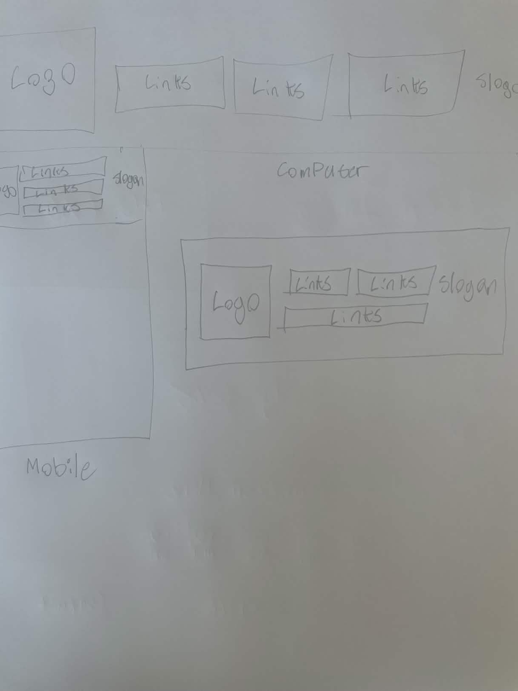
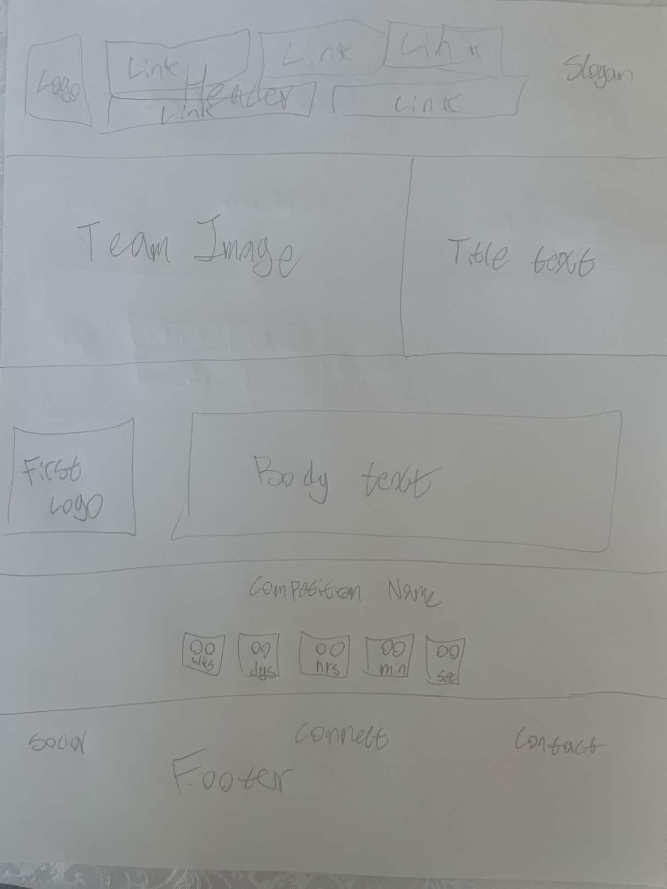
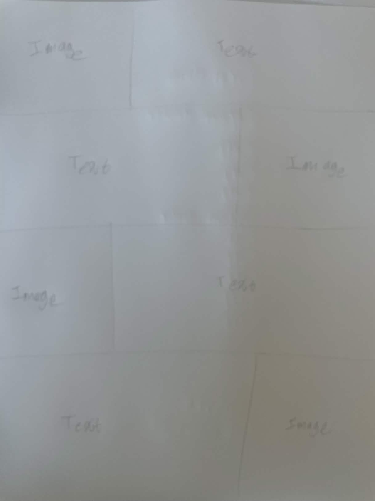
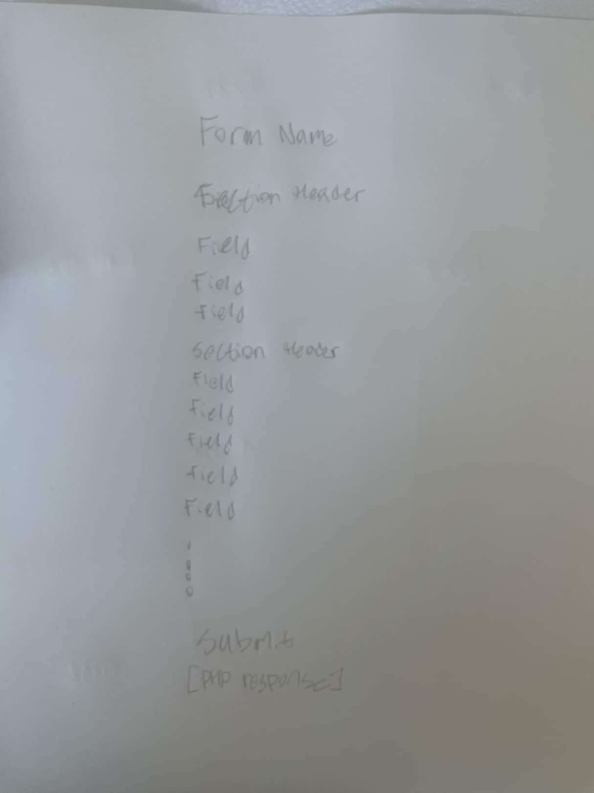

Tasks due by: Apr 18th
Tasks complete by: Apr 10th
PLAN BREAKDOWN BY PAGE
Page Headers
HTML, CSS, JS
The page headers will be designed to be responsive to screen width, promoting a consistent user
experience
where users can clearly distinguish between internal pages and external links. The header will
link to the
main pages on the site (robot, members, sponsors, etc.). Using JavaScript, the header will
dynamically
utilize vertical space to allow for larger buttons on smaller screens, while ensuring that the
client logo,
navigation buttons, and slogan remain visible at all times.

Landing Page
HTML, CSS, JS, PHP
The goal of the site, and by extension the landing page, will be to closely resemble the website
for team
2056. With this in mind, the design will remain simple, using basic CSS
styling with
flex grids to ensure a mobile-friendly experience. A key feature of this page will be a
countdown timer.
Using AJAX practices, the page will send asynchronous requests to a PHP backend server,
including the last
known timings for events. The PHP server will then query multiple API endpoints and wait for all
responses
before processing the data. If updated data is available, it will be returned to the front-end;
otherwise,
localStorage will be used to retrieve previously stored timings.

Robots Page
HTML, CSS
The robots page will maintain a simple design, with no complex functionality. Flexbox layouts
will be used
to ensure a mobile-friendly experience. The page will display details of the robot's
accomplishments in the
2025 season. Due to client requirements and the ongoing 2026 season, details about current
performance will
not be included, in order to maintain a competitive advantage for upcoming events.

Competition Scouting Page
HTML, CSS, JS, PHP, SQL
The competition scouting page will be designed to be simple and efficient, as it will primarily
be used in
fast-paced competition environments. The page will contain a JavaScript-powered form that allows
users to
enter observations about robots during matches. This data will be sent to a PHP backend, where
it will be
validated, sanitized, and stored in an SQL database. The database will include a table that
stores how each
team performs in each match, along with a secondary table that maps match IDs to teams for
faster lookup and
sorting. This additional structure will support team captains during playoff selection by making
relevant
data easier to access and analyze.

PLAN BREAKDOWN BY LANGUAGE
HTML
Header, Landing, Robot, Scouting
HTML will be used to structure all pages, making use of appropriate semantic elements such as
divs, forms,
buttons, and details tags. Special care will be taken when designing the header to ensure it
does not
interfere with other page content. IDs and class names will be chosen to be descriptive and
consistent,
allowing for easy identification and maintenance across HTML, CSS, and JavaScript files.
CSS
Header, Landing, Robot, Scouting
CSS will be used to style all components of the website, with an emphasis on modular and
isolated styling to
prevent conflicts with other team members' work. A global stylesheet will be implemented to
manage overall
layout behaviour, such as enabling vertical scrolling and removing default browser margins.
Flexbox layouts
and media queries will be used extensively to ensure that the site remains responsive and
readable across a
wide range of devices.
JavaScript
Header, Landing, Scouting
Each component requiring JavaScript will be placed in its own file to promote separation of
concerns. The
header script will dynamically adjust image sizing based on the height of navigation elements.
The scouting
and timer components will use AJAX to send asynchronous requests to the PHP backend. While
front-end
validation will be minimal due to the use of constrained input types, the system will still
provide user
feedback based on server-side validation results, displaying success or error messages before
resetting the
form.
PHP
Landing, Scouting
PHP will handle backend processing for both the landing page and scouting system. For the
landing page, PHP
will request data from The Blue Alliance API and return relevant competition information to the
front-end.
Future improvements may include utilizing API response codes to detect unchanged data and reduce
processing
overhead. For the scouting system, PHP will validate and sanitize all incoming data, enforce
input length
limits, and use prepared statements to prevent SQL injection and cross-site scripting attacks.
The script
will return detailed error messages for expected issues and more generic responses for
unexpected errors or
suspicious input.
SQL
Scouting
The SQL database should use two tables to store match scouting data in a structured and
efficient way. The
primary table will store general match information, including an auto-incrementing match ID and
an
automatically generated timestamp for when the entry is created. All additional match-level data
from the
form will be stored alongside this. A second table will be used to store team-specific data,
where each team
in a match will be given its own row and linked back to the main match entry using a foreign
key. This table
will include the team number, pathing choice, disabled status, and a list of observed
capabilities during
that match.
Separating the data in this way will allow multiple teams to be associated with a single match
while keeping
the database organized and easy to query, especially when filtering or sorting by team. It will
also improve
data integrity, as deleting a match should automatically remove all related team entries through
cascading
deletes. None of the data in this system should be hashed, as it is intentionally non-sensitive
and designed
to be publicly accessible. The data is intended to be shared and reused by others for scouting
and analysis
purposes within the FRC community.
 Youtube
Youtube
 Blue
Alliance
Blue
Alliance